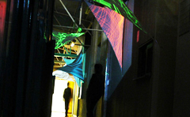
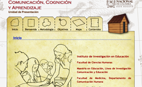
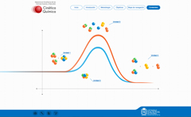
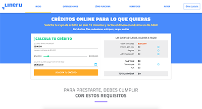

ENTOMUSEOProyectos
ENTOMUSEOProyectos- Delónico: Delirio OníricoProyectos
 Gestión de Fondos de Servicios Educativos...Proyectos
Gestión de Fondos de Servicios Educativos...Proyectos- Comunicación, Cognición y AprendizajeProyectos
 Maestría en Salud y Producción Animal Proyectos
Maestría en Salud y Producción Animal Proyectos- Cinética Química Proyectos
 Guía de acompañamiento integral...
Guía de acompañamiento integral... Maestría en Ciencias Exactas Proyectos
Maestría en Ciencias Exactas Proyectos English course - Based on the ALC Proyectos
English course - Based on the ALC Proyectos Relatos autobiográficos e identidades
Relatos autobiográficos e identidades Pixel PainterExperimentos
Pixel PainterExperimentos Composition 8. KandinskyExperimentos
Composition 8. KandinskyExperimentos Cinemática programadaExperimentos
Cinemática programadaExperimentos Colores, música y formas Experimentos
Colores, música y formas Experimentos Librería de Actividades E-learningRecursos
Librería de Actividades E-learningRecursos- Elempleo.comProyectos
- LineruProyectos